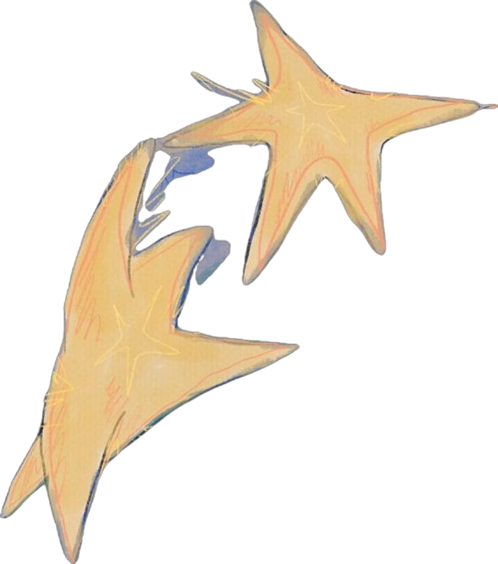

Red Flowers
The signs were right there. She always had red flowers marking her arms. But at some point in the friendship, she started to pull away from us and distanced herself. We felt that if we asked…we’d be prying into something she didn’t want us to know, and that would be the final thing that pushed her away from us.
And we would lose her...
If even one of us had the courage to overstep and pry… maybe things wouldn’t have ended the way they did.
We lost her either way.
The Stars
Such brilliant protagonists we are.
It was the first day I realized who I was and what I wanted. There was supposed to be a meteor shower, and the two of us had decided to sit on the rooftop and watch the stars fall together. But there was so much light pollution we couldn’t see a thing. So…you have the brilliant idea to make our own stars.
Hah. This is so stupid. We’re being so stupid.
What do you mean! This is fun!
We spent 3 hours straining our eyes to see shooting stars that were never going to be visible in the city, 2 hours drawing stars, and then 1 hour taping them to the ceiling!
So what!? This is fun, we’re being interesting.
...
What’s the use of being interesting?
The world focuses on interesting people. We must strive to be different and live fun lives.
It’s what makes us protagonists.
...
...
If you stare at them long enough, they start to move a little.
…I think that’s just your eyes giving out from focusing too much.
...
There’s no benefit to conforming to what everyone else wants you to be, so you might as well just be yourself.
...
Stop, you're always doing this.
Doing what?
This!
You know don't you?
...so what? Who cares if you like girls?
I don't like girls...I like a girl.
I know.
Don't you think they're beautiful?
...yes.
Where are you looking? I meant the stars silly.
I know...

I'm going to kill myself.
...
...
...is there anything I can do to make you change your mind?
No, there isn't. I'm pretty set on it.
Although I realize now that what I said at the time was wrong, I'm glad you felt loved in your last moments. At least I hope you did.
If you truly feel like you can’t keep going, then I won’t stop you.
I want you to know that you will always be my best friend and I will always love you. It’s because I love you that I won’t force you to stay… if you’ve decided you don’t want to.
Thank you for supporting me in my last moments.
In our next life, I hope we get to be best friends again.
We better be.
...As much as I want you to stay, I know how hard things have been for you. And I want you to feel loved if you decide to do this.
Thank you.
I was wrong to give you my blessing. I understand that now.
THE GOLDFISH

A Goldfish is forgetful.
It was a horrible realization to come to.
I had forgotten your face.
Goldfish are said to be forgetful, but adaptable. They easily adapt to their surroundings regardless of the changes.
I didn't want to move on with life as if you didn't exist.
So I decided that if I lived within a singular, fleeting, precious moment forever...
Everything I've love would never be forgotten.
It would no longer be fleeting and it would never fall victim to time again.